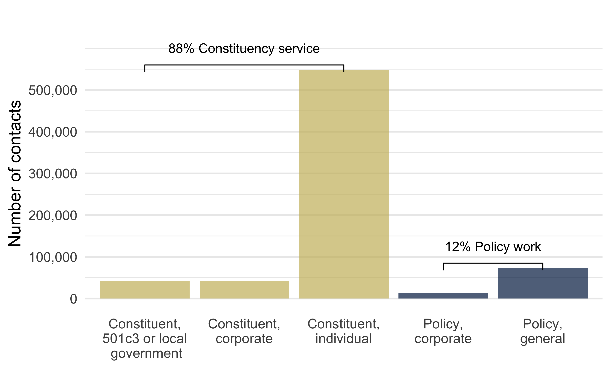

3 Measuring (Invisible) Interbranch Representation
ABSTRACT: We discuss how, up to this point, interbranch representation has been largely invisible to voters, journalists, and scholars, which has consequences for democratic accountability. We describe how we measure interbranch representation, our data collection process, and the methods we use to analyze the data. We detail the process of translating letters and congressional correspondence logs from many different agencies into aggregate data on representation activity. We then describe our coding process for determining who was being represented in each case. Finally, we present descriptive tables and figures, documenting staggering levels of inequality in the provision of interbranch representation across legislators (and districts) that motivate the rest of the book.
The invisible nature of interbranch representation means that data on these activities were not readily available. In this chapter, we describe the extensive process by which we collected, cleaned, coded, and analyzed the data that we use to measure interbranch representation, which comes from federal agencies’ congressional correspondence tracking systems. We requested records from 295 federal agencies and received records from 179. Thousands of pages of agency logs yielded 962,720 instances of what agencies tagged as congressional correspondence, 837,223 of which we link to a legislator in office at the time.1 This averages to 108 per legislator per year, with some, as we noted in Chapter 1, doing an order of magnitude more than the average.
Since 2016, we have been filing FOIA requests with all federal agencies and subagencies for all records of their correspondence with members of Congress. This effort to collect a near census of legislator-agency interactions has yielded by far the largest and most comprehensive dataset of its kind. We have spent hundreds of hours negotiating with FOIA officers, filing appeals, and convincing judges to order agencies to provide these documents. The raw data we received (often scanned PDFs full of redactions, handwritten call logs, or screenshots of database entries) has taken years to clean and process. We spent an even greater effort on hand-coding nearly all of these records—over half a million legislator requests to federal agencies—to capture whom the legislator was advocating on behalf of in each instance. This effort gives us high confidence in the quality of the data we use to make inferences. From these new data emerged a new picture of what legislator offices do and how they interact with the executive branch that demanded rethinking our understanding of representation and the institutions of American democracy.
We assess both cross-sectional differences across legislators (e.g., to explain highly unequal levels of interbranch representation) and within-legislator and within-district differences-in-differences specifications for causal leverage. We also model legislators’ distribution of interbranch representation across types of constituents and government agencies. These data and strategies allow us to identify causes of inequality in interbranch representation and how those causes differ for different constituencies.
3.1 New Data
To study interbranch representation, we rely on congressional correspondence logs from federal agencies. When members of Congress contact the bureaucracy, most federal agencies enter these contacts into a database or keep some other kind of record of the correspondence. These congressional correspondence logs therefore allow us to determine the overall volume of interbranch representation for each member of Congress in our chosen time period, as well as the general purpose of the contact. Importantly, we did not, in most cases, obtain the full text of the communications themselves. However, the summaries of the subjects provided rich data on the content of each item of communication.
Chapter 2 established that interbranch representation occurs behind the scenes, out of view of the public, journalists, and scholars. More specifically, these records of communications between members of Congress and federal agencies are, for the most part, not proactively disclosed to the public. We therefore obtained our data through a large number of Freedom of Information Act (FOIA) requests for federal agencies’ congressional correspondence logs.2
Obtaining records of legislators’ communications with federal agencies through FOIA requests is laborious, painstaking, and time-consuming, with agencies often taking years to respond to a single request. Understandably, therefore, recent studies have focused on records from a small number of agencies. Those studies have yielded important findings regarding distributive politics (Mills and Kalaf-Hughes 2015), the policy strategies of cross-pressured legislators (Ritchie 2018, 2023), the role of ideology in congressional oversight (Lowande 2019), descriptive representation (Lowande, Ritchie, and Lauterbach 2019), and money in politics (Powell, Judge-Lord, and Grimmer 2023). With a near census of agencies, we are able to study, for the first time (except for Judge-Lord, Powell, and Grimmer (2026)), patterns across all members and policy areas.
We are contributing to that growing field of scholarship with a painstakingly collected new dataset that represents a near census of legislator contacts federal agencies (179 of 295 agencies) from 2007 to 2025 that required 434 FOIA requests (some agencies required multiple requests), over a thousand follow-up and clarification emails, and dozens of hours on the phone with FOIA officers. These data (an order of magnitude greater than those in all prior studies combined) enable us to address a range of new questions about representation that previous studies, which focused on a small number of agencies, could not. Our data allow us to quantify the nature of the contact, but also include rich data on the content of those contacts.
Data collection process
We set out to collect data on congressional correspondence with all federal agencies between 2007 and the date of the request (2017 through early 2025). Each federal agency and many sub-agencies have a FOIA office. Separate from the FOIA office, each agency keeps track of congressional correspondence differently. These differences are opaque, but became apparent to us as we filed requests and received records across agencies.
From the beginning, we suspected that congressional offices communicated directly with many sub-agencies, not just Offices of Legislative Affairs or Offices of the Secretary. This intuition was validated as we received distinct records from subagency components, even after the central office had told us that they maintained all records of congressional correspondence for their agency. Other central offices clearer about the decentralized nature of interbranch representation. As one FOIA officer put it “OSD-JS (Office of the Secretary of Defense Joint Staff) Legislative Affairs is supposed to be the front door for DOD, but if somebody knows somebody, well…”
Our first FOIA requests in 2016 asked about the kinds of records the agency kept. This informed our initial round of FOIA requests for correspondence logs with 27 sub-agencies within the U.S. Department of Agriculture (USDA) in February of 2017.3 By May, we had received records from 20 of the USDA sub-agencies. Many other agencies, including the Environmental Protection Agency (EPA), the Department of Commerce, the Department of Education, the Indian Health Service (IHS) and Substance Abuse and Mental Health Services Administration (SAMHSA) within the Department of Health and Human Services, and several components of the Department of Transportation like the Federal Aviation Administration (FAA) and Federal Highway Administration (FHWA), also provided records in matter of weeks or months.
However, the process for many other agencies was far less straightforward. We waited for nearly a year for records from the Department of Veterans Affairs. Other agencies, including the Internal Revenue Service (IRS) in the Treasury Department, the Office of Congressional and Intergovernmental Affairs (OCIA) in the Department of Labor, and the Bureau of Indian Affairs and the Office of the Solicitor within the Department of the Interior, took a year or more. Still other agencies, including the Centers for Disease Control and Prevention (CDC) in the Department of Health and Human Services, asked that we accept a rolling release of the records (usually a year or two at a time). The U.S. Citizenship and Immigration Services (USCIS) in the Department of Homeland Security has an extraordinary volume of congressional correspondence and initially agreed to give us congressional correspondence logs from one year, 2018. We received these logs a year and a half after filing the request. Immediately upon receiving the 2018 data in August of 2020, we filed a second request for congressional correspondence logs from 2016, which we received four and a half years later, in April of 2025.
The State Department is notorious for its backlog of FOIA requests. We filed our initial request for all State Department congressional correspondence logs on May 18, 2018. As of June 2026, we have still not received the records. We have been in frequent communication with State Department FOIA officials over the last eight years to check on the status of our request. State is the only department for which we do not have records.
After receiving initial batches of documents (primarily covering 2007-2017) for a number of agencies, we then filed second requests with these agencies for their congressional correspondence logs for 2018 and 2019. Response times also varied for this second batch of requests, although they were shorter on average because most of these requests were directed to agencies that had already been responsive. In total, we have filed at least 434 FOIA requests over nearly nine and a half years.
No single system or database across agencies for keeping track of congressional correspondence. Agencies vary in the sophistication of their tracking systems and in what these systems record. Some agencies changed tracking systems partway through our time series, ultimately giving us multiple sets of logs in slightly different formats from the same agency. At minimum, useful congressional correspondence logs contained the name(s) of the sender(s) (members of Congress), the date of the correspondence, and a summary of the subject of the correspondence.
The formats in which we received the records varied widely. Although we requested that records be sent to us “in the original, machine-readable format (i.e., if possible, not .pdf),” many agencies were only able to provide the data as PDFs because of the redaction of personal identifiable information that was required. In such situations, we converted the PDFs to spreadsheets. Some PDFs were machine-readable and could neatly be converted to spreadsheets using PDF conversion software. Other PDFs required extensive reconstruction by hand, mostly because redactions split individual observations. Still others were not machine-readable, including handwritten notes, and had to be typed into spreadsheets entirely by hand.
Processing and Coding the Data
After converting the agency-specific logs to spreadsheet form if necessary, we then turned to cleaning the data from each agency. Our goal was to identify all instances of correspondence in the agency logs that could be linked to a member of Congress during the time in which they were in office. As such, we required the name of the member of Congress and the date of the correspondence to appropriately match the observations with our list of member names and incorporate the observations into our merged dataset. Because of the variation in agencies’ record-keeping practices, the necessary conversions of the logs from PDFs, and natural human error, the data required extensive cleaning. Member names failed to match for a variety of reasons, including typographical errors in agencies’ logs, the use of aliases, nicknames, or maiden and middle names for legislators, and OCR errors that occurred in the process of converting the logs. (For example, in one instance, “Arlen Specter” had become “Alien Specter.”) We also had to drop observations that were included in the logs but were not sent by members of Congress; this included communications from governors, state legislators, and other political officials, as well as outgoing correspondence from the agency to members of Congress. We completed this work primarily on an ongoing basis as we received new data, completing a large portion of the historical records with the help of several undergraduate research assistants in the summers of 2018 and 2019.
Another concurrent task was coding the data to identify the purpose of the communication. We set out to identify five different types: (1) constituency service on behalf of individuals; (2) constituency service on behalf of businesses; (3) constituency service on behalf of nonprofits or local governments; (4) policy work on behalf of industries; and (5) general policy work. We also included a sixth category for “other” correspondence, which mostly included thank-you notes, congratulations, and other personal letters that rarely appeared in the data. Where agencies did not provide the original letters or emails from members of Congress, we used the information contained in the summaries of the correspondence, usually found in a “Subject” field from a correspondence tracking system, to code each contact. The level of detail included in these summaries varied widely across agencies. For some agencies with sparser subjects, it was possible to auto-code for our types by identifying keywords or phrases that were repeated throughout the logs for a particular agency. We only did this when we were sure that every instance of that key phrase was unambiguously a certain type. Some agencies tagged individual constituency service requests as “casework” or “constituent,” which was useful for our purposes. Most of the data, however, required hand-coding to consider detailed and/or ambiguous subjects more carefully. For example, some contacts were labeled as follow-up from a contact on an earlier date, the subject of which we could identify by looking for the earlier record.
Figure 3.1 and Table 3.1 show the result of our coding for the hand-coded observations. The vast majority of observations–over 540,000–were coded as constituency service on behalf of individuals.4 Altogether, all three types of constituency service make up 88% of our observations. We observed nearly equal amounts of constituency service on behalf of businesses and nonprofits/local governments (about 42,000 each).5 The remaining 12% of our observations were coded as policy work, with most of that (over 72,000 observations) being general policy work. Corporate policy work was the smallest category, with over 13,000 observations.
| Type of Interbranch Representation | N |
|---|---|
| Constituent (501c3 or local government) | 41,917 |
| Constituent (corporate) | 42,092 |
| Constituent (individual) | 547,202 |
| Policy (general) | 72,570 |
| Policy (corporate) | 13,617 |
| Uncoded | 115,566 |
| ————————————— | —— |
| TOTAL | 832,964 |
To facilitate hand-coding by a number of different research assistants over time (and to standardize and record our coding process), we created a detailed codebook that spells out the differences between our types. We defined personal/individual constituency service as “individual, non-commercial constituent service”; examples included “help with a government form…visa, back pay, military honor…disability application, worker compensation, personal complaint,” and other similar cases that were clearly on behalf of an individual with no business interests involved. We considered commercial service, or constituency service on behalf of businesses, to be “anything related to a specific individual case by a business (including business owners like farmers and consultants).” Examples included helping businesses with grants, loans, contracts, or fines. Service on behalf of government and nonprofit entities (type 3) was similar, except this work was done on behalf of “municipal or state governments (including cities, counties, etc.) or non-business-oriented nonprofit organizations.” It also included assistance with (or support for) grant applications. In many cases, agencies’ congressional correspondence logs named the specific government or nonprofit entity; for some organizations, it was necessary to conduct a web search to confirm their nonprofit status.
Our two remaining types of interbranch representation focused on policy work. Commercial policy involved “anything applying to a class of commercial activity or businesses (e.g., shipping, airlines, agriculture),” including “legislation, bills, acts, appropriations, authorizations, etc.” Some summaries of correspondence mentioned specific industries, which meant that these contacts were often fairly straightforward to code. Finally, we defined general policy work as work that was not done in the service of any particular individual, business, or industry. General policy communications included legislators’ requesting policy-relevant information; requests from legislators or committees related to hearing testimonies or reports; and requests for clarification on agency rules or lobbying regarding proposed agency rules.
The role of legislators and staff
This work is done almost entirely by office staff. Indeed, when members leave Congress, their staff continue to represent their district. For example, in the period between Rep. Patrick Meehan (PA-7) resigning from Congress in April of 2018 and Rep. Mary Gay Scanlon assuming office in November, USCIS received 51 requests from the office that the agency tagged as from “Vacant, Meehan” along with dozens of other letters from staff whose members were no longer serving and did not yet have a replacement. These letters end up getting dropped from our legislator-level analyses.
Committee staff are active as well. Agencies often made a record of phone calls, requests, or inquiries from committee staff. For some agencies, particular committee staffers were among the most frequent people in the correspondence logs. We only capture committee work when it is attributed to specific members. This usually involved letterhead communication from the chair or ranking member, sometimes signed by other (often co-partisan) members of the committee. Thus we are also under-counting interbranch representation when it comes to the work that committees do. For example, “House Ways and Means Committee Staff” wrote over 2000 letters to the U.S. Trade Representative between 2007 and 2014. These letters are not in our analysis because the agency did not identify them as coming from a member of Congress.
3.2 Measuring Interbranch Representation
Before describing the other measures that we use in our study of interbranch representation, it is important to establish what our data on interbranch representation can actually measure. We are capturing instances in which a legislator or their office contacts the bureaucracy for one of the five purposes described above. As we have discussed elsewhere, this is not necessarily the same as the number of constituents who contact that office to ask for help, because not every instance of constituent contact may warrant outreach to the bureaucracy. We are also not capturing other instances in which congressional offices may contact organizations or institutions other than the federal bureaucracy to help constituents. For example, congressional offices sometimes forward constituent correspondence about state-level issues to the appropriate state representatives. In some ways, then, we are underestimating the amount of work that congressional offices do to help constituents. As a measure of the work that congressional offices do with the bureaucracy, however, our data are extraordinarily useful.
The following sections describe how we augment our data on legislator requests to agencies with data from other scholars.
Measuring constituent demand
To measure the number, neediness, and political savvy of constituents, we use demographic estimates from the U.S. Census Bureau via Walker and Herman (2026), including the estimated population of states and congressional districts. We divide the estimated number of people with a bachelor’s degree or higher and the number of people receiving public assistance or SNAP by the totals in each sample to get the estimated percent of college graduates and percent of people receiving public assistance per district per year. Likewise, we divide the estimated numbers of people employed in the private, government, and nonprofit sectors by the totals provided by the Census for percentages of each type of employment.
Measuring legislator capacity
Experience
Legislators may benefit from experience in office and prior to office. As Judge-Lord, Powell, and Grimmer (2026) documented, much of the startup costs (especially for constituency service) occur in the first two years. We thus model experience as having more than two years in office for purposes of testing the impact of experience against other causes of variation in interbranch representation. As a measure of relevant experience prior to taking office, we use an indicator of whether the legislator was a state legislator provided by Volden and Wiseman (2014) and Volden and Wiseman (2018). Almost half of members of Congress previously served as a state legislator.
Institutional positions and oversight relationships
All executive-branch agencies “report” to one or more congressional committees charged with overseeing their work. Both chambers also have an “oversight” committee that focuses on a small number of investigations, usually of scandals or other alleged wrongdoing. Reporting committees are different. They may investigate perceived problems with the agencies they oversee. Indeed, oversight hearings — the classic example of congressional oversight — are often conducted by reporting committees. However, these committees also provide coverage over nearly the entire executive branch, dividing the work of monitoring and developing policy targeting particular agencies. Members of Congress have an especially close relationship with the agencies that report to their committees.
To identify this link between agencies and legislators, we combine four sources of existing data and augment it with additional research into the committees members sit on. We combine snapshots from the version history of current committee assignment data maintained by @unitedstates-project (2025). The result is a new dataset on committee assignments, including committee chair, ranking minority, subcommittee chair, and other leadership positions (updating Stewart and Woon 2017).6 We cross-checked and augmented these data with chair and subcommittee chair indicators compiled by Volden and Wiseman (2014) and Volden and Wiseman (2018) from the Almanac of American Politics. We adopt the definition of prestige committee assignments from Judge-Lord, Powell, and Grimmer (2026).
Finally, we crosswalk reporting committee assignments with committee jurisdictions using the ACUS Sourcebook of United States Executive Agencies (D. E. Lewis and Selin (2012)). This gives us an indicator for each legislator-agency pair of whether the legislator sat on a reporting committee with oversight jurisdiction over that agency in each congress. As discussed in the previous chapter, we consider oversight relationships to be a measure of capacity (because legislators have special access to committee staff and information and may be more likely to get a response from the agencies that report to them) and strategic behavior (because legislators seek to join committees that oversee parts of the government they care about).
Legislator office staffing levels
We use staff budget data for members of the House from Crosson et al. (2021), specifically Members’ Representational Allowance (MRA) and the portion of MRA each member spent.7 These data vary by Congress.
Measuring strategic behavior and the political environment
Office staff allocation across priorities
In addition to the overall staffing levels, Crosson et al. (2021) measure the allocation by category. We use spending on constituency service, legislative, and communications staff to measure how legislators prioritize their office resources. We compare each of these to office staff spending (the omitted category in the models).
Partisanship and Ideological Distance
We use legislator partisanship and ideology data from J. B. Lewis et al. (2024). To assess the ideological distance between members of Congress and specific federal agencies, we subtract a member’s first dimension DW-NOMINATE scores (J. B. Lewis et al. 2024) from a survey-based measure of federal agencies’ perceived ideological leanings (Richardson, Clinton, and Lewis 2018).8 For example, Bernie Sanders, with a NOMINATE score of -0.545 (liberal), has a distance close to zero with the Department of Labor’s Mine Health and Safety Administration with a score of -0.580 (liberal), but a distance close to 1 with the United States Trade Representative (USTR) with a score of 0.439 (conservative). The largest distance in our data is 2.66 between the Office of the Secretary of Defense and Joint Staff (1.91) and Carte Goodwin (-0.747). To help guard against conclusions about distance being driven by distance from zero on the DW-NOMINATE scale, we control for the absolute value of the first dimension DW-NOMINATE. We also use other legislator-level variables from J. B. Lewis et al. (2024), including year of first election to calculate experience in office and party membership to derive majority status and whether a legislator is a member of the president’s party.
Electoral context
For data on electoral competitiveness, we start with data from Thomsen (2023) on vote share in primary and general elections, adopting her definition of whether an election was competitive. For general election competitiveness, we fill in gaps in the Thomsen (2023) data by applying a similar decision rule (whether the winner received less than 57.5% of the vote) to vote share data compiled by Volden and Wiseman (2014) and Volden and Wiseman (2018). Notably, the average percent of members of Congress whose prior election was competitive (weighted by the number of agencies for which we have data for that year) was 30% for general elections and 10% for primary elections (House only). The number of districts change from non-competitive to competitive is even smaller, possibly frustrating tests for the effect of electoral competitiveness.
3.3 Statistical Models
Our analysis is generally at the legislator-agency-year level, with a few models at the district-agency-year level to examine changes in interbranch representation with electoral turnover. Our hypotheses in Chapter 2 set out expectations for differences across members and within-member variation. We thus estimate both cross-sectional and difference-in-differences regressions, similar to the specifications in Berry and Fowler (2016). Because our outcome is a count, we use negative binomial regression with agency-year fixed effects to estimate differences in interbranch representation across members of Congress (cross-sectional differences). To estimate within-legislator differences over time, we include legislator-agency fixed effects.9 Tests for differences within legislator-agency pairs take a form similar to Equation 3.1 (with additional variables, such as those relating to primary elections, that decrease the number of observations included only in some specifications). However, to assess how much each factor contributes to the observed differences across members shown in Figure 1.1, we must rely on cross-sectional estimates (Equation 3.1 without \(\gamma_{ij}\)).
We estimate all models separately for the House and the Senate, as well as pooled with an indicator to capture the capacity boost, including the staff allocation, that being a Senator provides.
Most predictors are at the legislator-year level (\(it\)) while a few are at the legislator-agency-year level (\(itj\)). Predictors at the legislator level (\(i\)) like prior experience are not included in difference-in-differences models because there is no within-legislator variation. When perceived ideological distance is included in models, we interact it with the indicator for whether the legislator has a co-partisan president (“president’s party”) because legislators may interact differently with aligned and unaligned agencies depending on their partisan alignment with the president.
\[ \begin{aligned} Y_{ijt}\mid X_{ijt},\gamma_{ij},\delta_{jt},m_{it},p_{it} &\sim \text{NegBin}(\mu_{ijt},\alpha),\\ \log(\mu_{ijt}) = \\ & \underline{-Demand-}\\ & \beta_1 \text{District Population}_{it}+\\ & \beta_2 \text{Percent Goverment Workers}_{it}+\\ & \beta_3 \text{Percent with College Degree}_{it}+\\ & \beta_4 \text{Percent Receiving Public Assistance}_{it}+\\ & \underline{-Capacity-}\\ & \beta_5 \text{Experience in Congress}_{it}+\\ & \beta_6 \text{Experience in State Legislator}_{it}+\\ & \beta_7 \text{Staff Budget}_{it}+\\ & \beta_8 \text{Committee Chair}_{it}+\\ & \beta_{9} \text{Subcommittee Chair}_{it}+\\ & \beta_{10} \text{Ranking Minority Committee Member}_{it}+\\ & \beta_{11} \text{Reporting Committee Member}_{itj}+\\ & \underline{-Environment-}\\ & \beta_{12} \text{Competitive Prior Election}_{it}+\\ & \beta_{13} \text{Republican}_{it}+\\ & \beta_{14} \text{President's Party}_{it}+\\ & \beta_{15} \text{Perceived Ideological Distance}_{itj}+\\ & \beta_{16} \text{President's Party} \times \text{Perceived Distance}_{it}+\\ & \underline{-Other-}\\ & \beta_{17} \text{|DW-NOMINATE 1|}_{it}+\\ &...\\ & \gamma_{ij} + \delta_{jt} \end{aligned} \tag{3.1}\]
\(Y_{ijt}\) is the number of requests legislator \(i\) makes to agency \(j\) in year \(t\). We estimate a negative binomial count model with conditional mean \(\mu_{ijt}\) and overdispersion parameter \(\alpha\). The conditional mean is linked to covariates via the log link, \(\log(\mu_{ijt})\): a one-unit increase in a covariate multiplies the expected count by \(\exp(\beta)\), holding other terms fixed.
\(\gamma_{ij}\) denotes a legislator–agency fixed effect that is estimated using a true conditional fixed-effects approach (i.e., conditioned out rather than included as a full set of dummy variables). This fixed effect controls for time-invariant legislator characteristics and time-invariant legislator–agency-specific factors, including persistent constituent demand for assistance from a given agency and stable state or district attributes (population, demographics, local industries) that shape demand for particular agencies.
\(\delta_{jt}\) is an agency-year fixed effect that accounts for agency-specific shocks over time that may affect the level of requests received from legislators in the periods for which data are available from each agency.
Modeling the effects of staff allocation
We model the effect of staff allocation decisions in a separate model of a similar form, primarily because these decisions are causally downstream of nearly everything in Equation 3.1. Nevertheless, we also include a version that models the effects of staff allocation conditional on the capacity and political environment variables from Equation 3.1. Staff allocation data from Crosson et al. (2021) only cover 1999-2015, so these models necessarily drop data. The allocation of staff resources across constituent, policy, and communications varies significantly within legislative offices over time (see Figure B.8), so we are able to estimate effects of these decisions across legislator offices and legislator offices over time.
\[ \begin{aligned} Y_{ijt}\mid X_{ijt},\gamma_{ij},\delta_{jt},m_{it},p_{it} &\sim \text{NegBin}(\mu_{ijt},\alpha),\\ \log(\mu_{ijt}) = \\ & \underline{-Demand-}\\ & \beta_1 \text{Legislative Spending}_{it}+\\ & \beta_2 \text{Communications Spending}_{it}+\\ & \beta_3 \text{Constituent Spending}_{it}+\\ ... & \gamma_{ij} + \delta_{jt} \end{aligned} \tag{3.2}\]
Modeling the effect of electoral turnover
Finally, we estimate a district-level model (Equation 3.3). In contrast to other models, this model estimates counts per district \(d\) rather than legislator \(i\). The main coefficients of interest are the average effect of a district electing a new person to Congress and whether new legislators are able to do more interbranch representation if they replace a member of the same party (because they are more likely to retain staff with experience serving the district).
Like the legislator-level model, district fixed effects should largely control for differences in constituent demand across districts. The district-level specification holds constant the level of demand in a district while examining things that vary little over time within legislators, such as partisan affiliation or a legislator’s perceived ideological distance from each agency. Electoral turnover thus provides a valuable additional way to assess competing theories about whether ideological distance will lead to more or less interbranch representation. The district-level analysis also allows us to estimate the effect of partisan turnover, but we only have theoretical predictions for partisan turnover for representation of business interests.
\[ \begin{aligned} Y_{ijt}\mid X_{ijt},\gamma_{ij},\delta_{jt},m_{it},p_{it} &\sim \text{NegBin}(\mu_{ijt},\alpha),\\ \log(\mu_{ijt}) = \\ & \beta_1 \text{New Member}_{dt}+\\ & \beta_6 \text{Same Party}_{dt}+\\ & \beta_7 \text{New Member} \times \text{Same Party}_{dt}+\\ & \beta_{12} \text{Reporting Committee Member}_{dtj}+\\ & \underline{-Environment-}\\ & \beta_{13} \text{Competitive Prior Election}_{dt}+\\ & \beta_{14} \text{Republican}_{dt}+\\ & \beta_{15} \text{President's Party}_{dt}+\\ & \beta_{16} \text{Perceived Ideological Distance}_{dtj}+\\ & \beta_{17} \text{President's Party} \times \text{Perceived Distance}_{dt}+\\ & \underline{-Other-}\\ & \beta_{18} \text{|DW-NOMINATE 1|}_{dt}+\\ &...\\ & \gamma_{d} + \delta_{jt} \end{aligned} \tag{3.3}\]
The remainder are committee staff, state legislators, judges, agency officials, lobbyists, White House officials, former members of Congress, or future members of Congress and others who were, for various reasons, swept into an agency’s tracking systems or search for records. In some cases, agencies appeared to use their congressional correspondence tracking system as a general for VIPs. The Department of Education included Politico correspondent Jennifer Haberkorn and Kenneth P Vogel from the New York Times. The Federal Highway Administration tagged 27 letters from a particularly well-connected consultant. A smaller number are members of Congress whose names were ambiguous, illegible, or inappropriately redacted. ↩︎
Some agencies publish previously and/or frequently requested records in online reading rooms on their FOIA websites. In such cases, we were able to obtain some data without making a new request. However, these instances were relatively rare. The only agency we have found to publish records of congressional correspondence proactively is the Federal Energy Regulatory Commission. Some FOIA offices did everything they could to refuse our requests. Other FOIA offices said they were “waiting for someone to do this so [they] don’t have to keep dealing with piecemeal requests, which [they] get all of the time.”↩︎
Several of these requests turned out to be redundant, as some USDA components held congressional correspondence logs for multiple sub-agencies. This turned out to be a common pattern where record-keeping was fairly opaque, even to FOIA officers, who referred us back and forth among components.↩︎
Due to incomplete record keeping and compliance with our FOIA requests, these are certainly under counts. One vendor of correspondence management systems (Stowe 2026) estimated that congressional offices logged 128 thousand cases in 2022 alone — though we do not know what portion of these required dealing with the Federal Bureaucracy.↩︎
Our overall breakdown of these three types of constituency service is similar to that observed by Johannes (1984) decades earlier. In surveying 37 Senate offices, Johannes found that 73.2% of all cases they received came from individuals; 11.2% came from state and local governments; and the rest came from businesses, private organizations, and other groups. Among the 144 House offices surveyed, 80% of their incoming cases came from individuals, while 8.9% came from government, and the remainder came from businesses and other organizations.↩︎
Committee assignment and position data are available at https://github.com/judgelord/committees.↩︎
Crosson et al. (2021) are available via the replication files for Crosson and Kaslovsky (2024)↩︎
Technically, 0 has no special meaning on these latent scales; therefore, for example, there is no reason that -1 and 1 are equally ideologically distant. However, the Richardson, Clinton, and Lewis (2018) scale is locally identified to have mean 0, so absolute value serves as a linear measure of distance from the mean. Moreover, agencies with ideological scores near zero include the National Aeronautics and Space Administration (NASA), National Institute of Standards and Technology (NIST), and Veterans Benefits Administration (VBA), which are agencies that respondents presumably would perceive to be neither liberal nor conservative when responding to the survey question, suggesting 0 could be considered “moderate.” Richardson, Clinton, and Lewis (2018) estimates subagency-specific perceived ideology scores for many sub-agencies in our data. For sub-agencies that do not have a specific score, we use their department’s score. Six small, extremely low-salience independent agencies or commissions do not have a score. We assign them a score of 0. These six were the American Battle Monuments Commission (ABMC), the Court Services and Offender Supervision Agency (CSOSA), National Capital Planning Commission (NCPA; despite making the news in 2026, it is reasonable to assume it did not have a strong partisan perception prior), U.S. Nuclear Waste Technical Review Board, the Postal Regulatory Commission (PRC), U.S. Railroad Retirement Board (RRB)↩︎
We drop ten member-year level observations where members switched chambers mid-congress because the office resources of members of the House and Senate differ significantly and, thus, attributing their counts to either House or Senate in those years is not quite right.↩︎